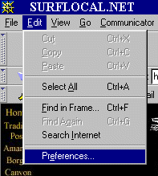
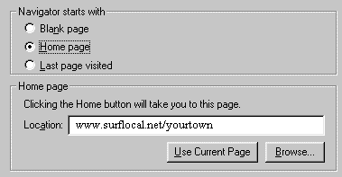

There was an error in changing your start-up page.
It's OK! It's
Easy
to manually change it:
1)Click on "Edit"
2)Click on "Prefrences"

3)Type in "http://www.surflocal.net/YourcitynameST"
or Click on "Use Current Page"

Hit OK and
Promote Local Business
is now your start page.
Close this page and see instructions.